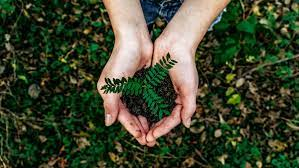
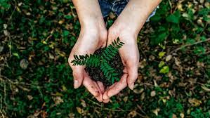

|
Animal products like meat, dairy, and eggs are the highest-impact
foods on Earth. To lower your diet’s footprint, consider
transitioning to a vegan diet, or at least eating more vegan
meals. Along with this, it’s important to focus on wasting less
food.
|
Instead of sending food scraps (that includes things like
vegetable peels, avocado pits, and spoiled leftovers) to landfill,
start composting. Composting is the process of returning anything
that comes from nature to the earth, and letting it biodegrade
into soil. Setting up a compost bin is super easy if you have a
backyard, but it’s also possible if you live in an apartment or in
a city with no yard.
|
Reducing single-use plastic is important for several reasons:
Environmental impact: Single-use plastics have a significant impact on the environment. They are often not disposed of properly and end up in the ocean or other natural environments where they can harm wildlife and pollute ecosystems. Reducing single-use plastic can help prevent these negative effects.
Carbon footprint: The production, transportation, and disposal of single-use plastic contribute to greenhouse gas emissions, which contribute to climate change. Reducing single-use plastic can help lower carbon emissions and mitigate the impacts of climate change.
Health concerns: Some single-use plastics, such as water bottles and food packaging, can release harmful chemicals into the products they contain, which can be harmful to human health. By reducing single-use plastic, we can help reduce our exposure to these chemicals.
Resource conservation: The production of single-use plastic requires significant amounts of resources, such as oil and water. Reducing single-use plastic can help conserve these resources and reduce our overall environmental impact.
Cost savings: Reducing single-use plastic can also save money. By using reusable alternatives, such as water bottles and shopping bags, we can reduce the amount of money we spend on disposable products over time.
|
 
